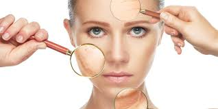
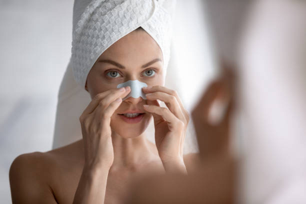
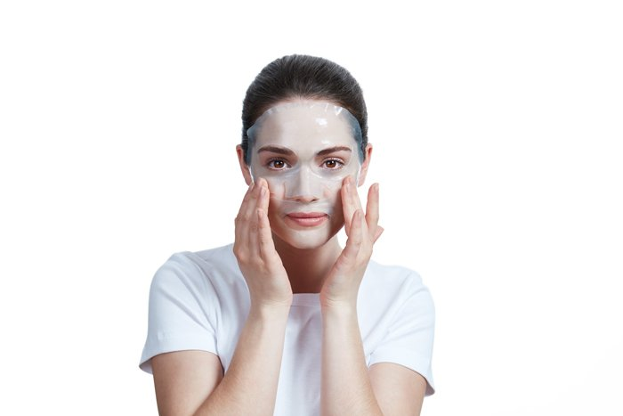
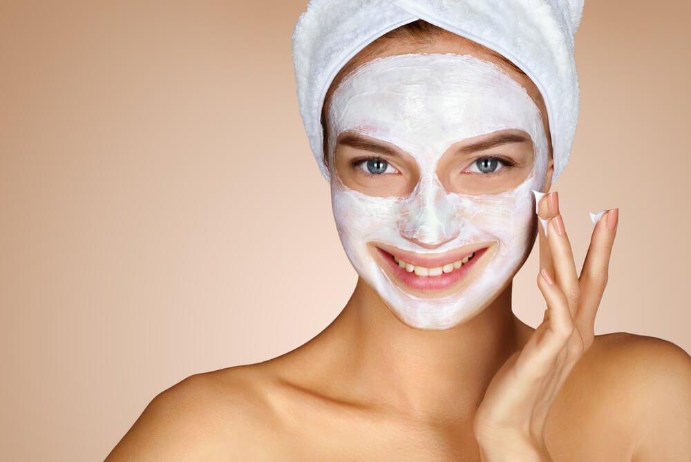
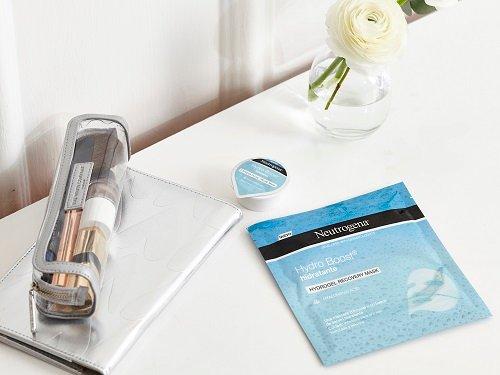
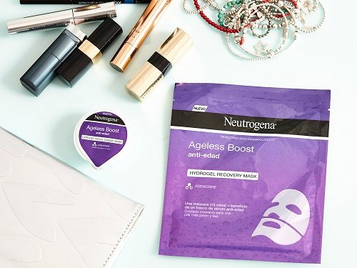
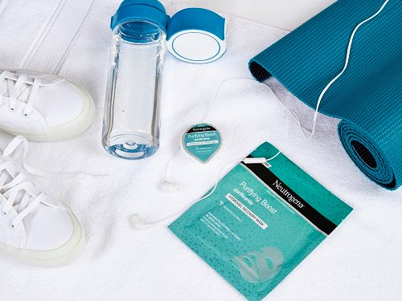
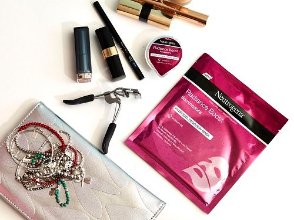

Beauty tips/Tips de belleza.
Contents:

(Pero antes de conocer estos tips debemos saber cuál es el significado de la belleza.)
¿Qué es Belleza?
Es una abstracta noción que se liga a númerosos aspectos de la existencia humana.La belleza se estudia dentro de la disciplina filosófica de la estética.
La palabra se deriva de bello, que proviene del latín bellus, que significa hermoso.
En este sentido, una de las características de la belleza es que se experimenta a través de los sentidos, principalmente la vista y el oído. Como tal, la belleza es una experiencia subjetiva, que puede variar no solo de un individuo a otro, sino entre culturas y épocas. Así, no necesariamente dos hombres evaluarán la belleza de la misma manera: para un alemán una morena latinoamericana puede resultar mucho más atractiva que las mujeres de su país, mientras que para un latinoamericano la belleza exótica de una alemana puede ser probablemente más subyugante.
No obstante, se coincide en que aspectos como la armonía y la proporción de las formas, la simetría de los rasgos y la ausencia de defectos físicos son característicos de la belleza física en una persona, entre otras cosas, porque denotan buena salud. La juventud, en este sentido, es también asociada frecuentemente al concepto de belleza.
¿Qué es belleza para la Filosofía?

En la filosofía la definición de belleza ha formado parte siempre de la estética. Así, ya encontramos en la filosofía platónica muchas de las cuestiones alrededor de la belleza y su naturaleza que, posteriormente, serán tratadas a lo largo de la historia.Puede citarse ya la obra de Platón “Hipias el mayor” como ejemplo del planteamiento de la cuestión de la belleza.
Abordemos el tema desde la filosofía occidental y, además, veamos cómo se realizan desde ella los planteamientos límites.
El planteamiento objetivista dice que la belleza es inherente al objeto que se reconoce como bello. Es cualidad propia del mismo.
El planteamiento subjetivista dice que la belleza de un objeto depende de la apreciación que de este objeto haga el sujeto. Aquí la belleza no es cualidad propia del objeto sino que depende de la valoración del sujeto.
Observemos que el postulado subjetivista coincide con lo que se decía al principio de que “cada cual tiene su idea y sus patrones de belleza”. Esa afirmación sería un ejemplo de un planteamiento de belleza desde el subjetivismo.
Pero hay más interpretaciones, así nos encontramos con otra que dice que la belleza es aquello que se concibe como valor, o, más exactamente, como la cualidad que hace aparecer un objeto como valioso desde el punto de vista estético.
Tips para la piel.
- Usar un exfoliante para deshacer la piel muerta,pero trata de hacerlo 2-3 veces por semana para que no sé reseque la piel.
- Los antihistamínicos para la alergía resecan la piel por lo que para temporada de alergías no es recomendable utilizar bases y es mejor que utilizes una crema hidratante con color.
- El mejor momento para aplicarte cremas es después de la ducha porque la piel esta limpia y sin grasa.
Tips para liberarse de esa espinilla molesta.
La piel te avisa de una manera muy particular cuando va aparecer,
ya que alguna zona de la piel donde va a salir se enrojece, para ello te recomendamos aplicarte
una mascarilla purificante a base de arcilla y mantela durante 15 minutos antes de que aclare.
Luego lavate la cara con mucho cuidado.
Tipos de Mascarillas
| Tipos de Mascarillas | Descripción | Precio | Imagen |
|---|---|---|---|
| Mascarilla Hidrogel. | Fueron diseñadas originalmente en Corea.Estas máscaras para la cara se acoplan perfectamente a la piel de tu rostro aumentando la absorción de sus principios en tan solo 15 minutos. Tan solo tendrás que retirar la máscara de hidrogel de tu rostro y masajear el producto restante | $25.000 |  |
| Mascarilla en Crema. | Estas mascarillas son de textura ligera, untuosa y contienen gran cantidad de nutrientes. Estas mascarillas en crema se pueden utilizar en una parte específica de la cara, a diferencia de las máscaras de hidrogel. Este tipo de mascarillas en crema debes retirarlas después de 15 minutos de acción con un disco de algodón o con abundante agua. | $18.000 |  |
| Mascarillas según el tipo de Piel | Descripción | Precio | Imagen |
| Mascarilla Hidratante. | Las mascarillas faciales hidratantes están indicadas para todo tipo de pieles, pero especialmente para aquellas que tienen disminuida la producción de sebo, como las pieles secas. | $30.000 |  |
| Mascarilla Antiedad. | Estas mascarillas faciales son ideales para las pieles más maduras, ya que ayudan a suavizar las líneas de expresión de la piel, ¡para poder lucir una piel más joven y lisa! | $25.000 |  |
| Mascarilla purificante. | Las mascarillas purificantes están recomendadas para todo tipo de pieles, y ayudan a que la piel se encuentre libre de impurezas. Esto significa que trabajará para balancear la piel y controlar la segregación de sebo. | $31.000 |  |
| Mascarillas Iluminadoras. | Si notas que tu piel está apagada y le falta vitalidad, debes escoger una máscara facial iluminadora. Con este tipo de máscaras faciales podrás lucir una piel iluminada, radiante y suave. | $20.000 |  |
Referencias.
¿Qué es Belleza?¿Qué es Belleza para la Filosofía?
Tipos de Mascarillas